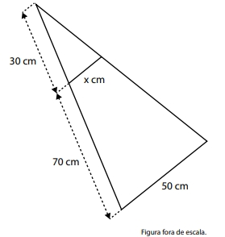

01. Em dez envelopes, foram colocados valores, em reais, de
modo que esses valores formam uma progressão aritmética. Ordenados os envelopes, de modo que o primeiro
tenha o menor valor e o último tenha o maior, tem-se que
no segundo envelope está contido o valor de R$ 120,00 e
no quinto envelope, o valor de R$ 210,00.
Qual o valor que está contido no décimo envelope?
02.Em uma loja, o preço de determinado produto para o
pagamento à vista é de R$ 1.400,00. Caso o comprador
queira, ele pode pagar o produto em duas vezes: uma parcela de R$ 900,00, no ato da compra, e financiar o restante,
pagando uma segunda parcela de R$ 560,00, após 30 dias
da data da compra.
Se uma pessoa optar pelo pagamento em duas vezes, qual
a porcentagem de juros que ela estará pagando no financiamento?
03.
Um quadrilátero tem os vértices nos pontos com as
seguintes coordenadas: (3,3), (3,5), (5,5) e (5,3). Qual é a
forma e o perímetro (soma das medidas dos lados) desse
quadrilátero?
04. Um marceneiro precisa montar, em madeira, duas peças
que serão encaixadas uma na outra. A figura a seguir
representa ambas as peças e identifica algumas de suas
medidas:

Sabendo que os lados representados com as medidas
50 cm e x cm são paralelos, o valor de x deve ser igual a:
05. João precisava de um empréstimo de R$ 10.000,00.
Seu irmão, sabendo que João iria solicitar um empréstimo
bancário, fez a seguinte proposta, que foi aceita por João:
em vez de João pagar juros bancários, ele emprestaria todo
o valor a João, com base na relação M = 10000 + 100 x,
sendo M correspondente ao montante a ser devolvido,
de uma só vez, e x corresponde ao número de meses
do período do empréstimo. Sabendo que João pagou
o empréstimo ao final do período de 5 meses, qual foi o
montante pago?
06. Em países como a Inglaterra, utiliza-se a polegada como
unidade de medida de comprimento. Sabendo-se que
1 polegada corresponde a 2,54 cm, um quarteirão que tem
2500 polegadas de comprimento tem como correspondente uma medida
07. Foi feito um levantamento do número de funcionários de
onze pequenas empresas recém-instaladas em um polo
industrial. Os números obtidos foram os seguintes:
15, 16, 16, 17, 17, 18, 22, 22, 22, 26, 28
Com o objetivo de obter dados para um estudo estatístico,
foram calculadas a média, a moda e a mediana do número
de funcionários dessas empresas. Quais foram os resultados obtidos
08. Tereza, que gosta de colecionar objetos, tinha certa quantidade de canetas que, adicionada à sua quarta parte,
totalizava 320 canetas. Sabendo que ela pretende reduzir
pela metade a quantidade de canetas colecionadas, com
quantas canetas ela pretende ficar?